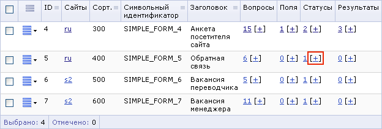
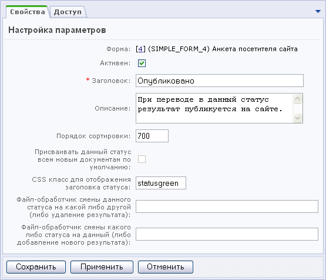

Перейдите в полный режим редактирования веб-форм. Для этого откройте страницу настроек модуля веб-форм (Настройки > Настройки продукта > Настройки модулей) и снимите флаг в поле Использовать упрощённый режим редактирования форм. Затем сохраните выполненные настройки с помощью кнопки Сохранить.
Откройте Административный раздел: Сервисы > Веб-формы > Настройка форм.
Для формы, статусы к которой вы хотите создать, в столбце Статусы нажмите ссылку [+].

На открывшейся форме установите флаг в поле Активен для того, чтобы статус был доступен.
В поле Заголовок введите название статуса.
Добавьте описание статуса.
Укажите порядок сортировки (последовательность, в которой будут показаны статусы при выводе выпадающего списка статусов и в Административной части).
В поле CSS класс для отображения заголовка статуса укажите стиль текста, которым будет выводиться заголовок статуса, Например, в таблице результатов, при просмотре или редактировании статуса при использовании шаблонов типа default.php.
Также вы можете указать файлы-обработчики смены статусов.

Откройте закладку Доступ.
Отметьте группы пользователей, которые имеют право на перевод результатов в данный статус. Вы можете отдельно назначить данное право для создателя результата. Чтобы пользователи могли воспользоваться этим правом, у них должно быть право на редактирование результата.
Укажите, какие группы пользователей имеют право на просмотр результатов в данном статусе. Вы можете отдельно назначить данное право для создателя результата.
Определите группы пользователей, которые получат право на редактирование результатов в данном статусе. Вы можете отдельно назначить данное право для создателя результата.
Укажите группы пользователей, члены которых могут удалять результаты в данном статусе. Вы можете отдельно назначить данное право для создателя результата.
Нажмите кнопку Сохранить, чтобы добавить новый статус.